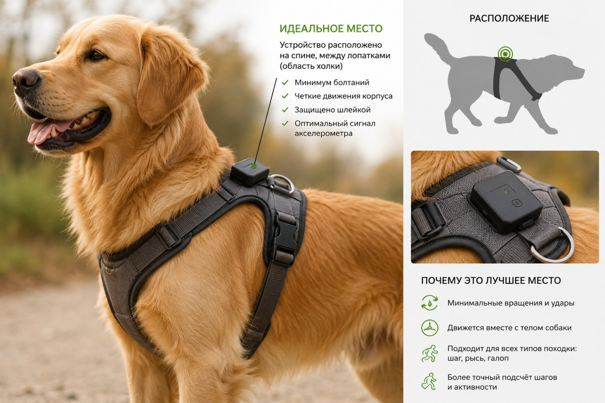
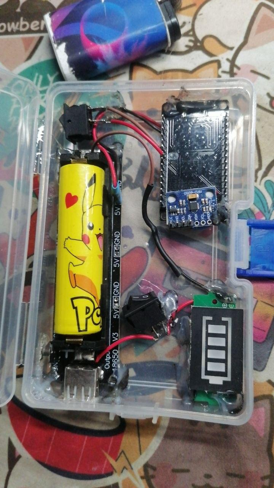
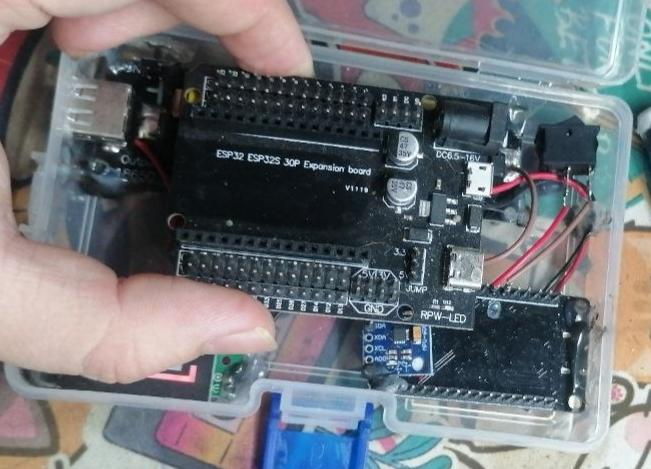

PawTrack круглосуточно считает шаги и активность питомца или животного на ферме и превращает сырые данные в понятные инсайты для владельца, ветеринара и зоотехника.
Активность животного сегодня оценивают «на глаз» — и теряют на этом здоровье и деньги.
Нет объективных данных о ежедневной нагрузке питомца. Недогул и перегруз одинаково незаметны.
Невозможно собрать достоверный анамнез активности — диагноз ставится по словам владельца.
Болезнь животного обнаруживают поздно. Результат — падение продуктивности и прямые финансовые потери.
Носимый трекер снимает данные, приложение объясняет, что они значат.
Компактный носимый датчик на ошейнике. Круглосуточный сбор данных о шагах и двигательной активности.
Данные синхронизируются на телефон: дневная норма, динамика, отклонения от привычного профиля.
Резкое падение активности — ранний сигнал болезни. Отчёт можно показать ветеринару или зоотехнику.
Датчик на ошейнике, приложение на телефоне и понятный отчёт, который можно показать врачу. Ничего лишнего.

Датчик крепится на обычный ошейник и не мешает животному.
Активность за день, динамика за неделю, сравнение с нормой животного.
Приложение подсказывает, когда стоит показать животное врачу.


Ошейники с GPS на рынке есть. Они отвечают на вопрос «где животное». PawTrack отвечает на другой — «как оно себя чувствует».
Доступные сейчас ошейники — это в первую очередь поиск потерявшегося питомца. Мы делаем инструмент наблюдения за состоянием: активность, динамика, отклонения.
Данные можно выгрузить и показать врачу на приёме. Не закрытая экосистема, а объективный анамнез, которого сегодня у ветеринара просто нет.
Своя инженерная разработка: поддержка, сервис и доработка под запросы пользователей без зависимости от зарубежных поставок.
Тот же принцип работает и для домашних животных, и для хозяйств. Начинаем с собак, масштабируем на КРС.
Выходим на рынок в две фазы.
| Фаза | Сегмент | Ключевая потребность |
|---|---|---|
| Фаза 1 | Владельцы домашних собак | Контроль здоровья и активности питомца |
| Фаза 1 | Ветеринарные клиники | Объективные данные для диагностики |
| Фаза 2 | Фермерские хозяйства (коровы, козы) | Мониторинг активности для производства продукта, раннее выявление болезни |
Собираем первую группу владельцев собак и ветклиник для тестирования прототипа.